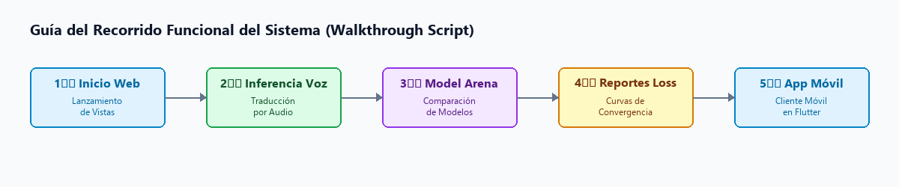

CE0217 - Entregable 5: Presentación, Video pitch y Sustentación Final - YatiqApp: Aprendizaje de Aimara y Quechua
1. Descripción
El presente entregable documenta el material de soporte, la estructura discursiva y los guiones técnicos diseñados para la Presentación, Video Pitch y Sustentación Final del sistema YatiqApp (Co-piloto de Inteligencia Artificial para la Preservación y Traducción de Lenguas Originarias).
El propósito de este entregable es estructurar y sintetizar el valor técnico y social de YatiqApp ante el jurado calificador de la universidad, resolviendo tres objetivos de comunicación: 1. Estructura del Video Pitch: Un guión de 3 a 5 minutos diseñado para enganchar al evaluador, explicar la problemática lingüística y demostrar la solución de software de forma concisa. 2. Guía de Demostración en Vivo (Demo Path): Un guión técnico paso a paso que asegura que el expositor pueda recorrer todas las funcionalidades críticas del sistema (traducción de voz, model arena y reportes) sin contratiempos. 3. Estructura de las Diapositivas (Pitch Deck): El diseño conceptual diapositiva por diapositiva que detalla los aspectos de ingeniería de software (arquitectura, base de datos y calidad) evaluados en la línea CE02.
2. Plantilla del Producto
🏷️ Portada
| Campo | Detalle |
|---|---|
| 🚀 Proyecto | YatiqApp: Aprendizaje de Aimara y Quechua |
| 🎓 Línea de Evaluación | CE02: Ingeniería de Software |
| 📦 Entregable | Entregable 5: Presentación, Video pitch y Sustentación Final |
| 👤 Responsable | Brayner Anibal Mamani Calcina |
🎯 Resumen Ejecutivo
Este documento proporciona las herramientas necesarias para la defensa del proyecto YatiqApp. La demostración en vivo utiliza capturas reales del sistema en funcionamiento para ilustrar la interactividad del traductor de voz y la rigurosidad científica de la comparación de modelos.
[!NOTE]
🔍 Hitos de la Estrategia de Sustentación:
- 💡 Estructura de Pitch de Alto Impacto: Centrado en el problema de la brecha digital de lenguas originarias y respaldado por la solución de hardware GPU/CPU local.
- 🎬 Recorrido Funcional Fluido: Demostración que abarca el backend FastAPI, proxy en Laravel y cliente móvil Flutter de extremo a extremo.
- 🔬 Respaldo Científico de Métricas: Uso de las gráficas de convergencia y el comparador BLEU/ChrF++ como evidencia empírica de la calidad del software.
Secciones de Desarrollo
📋 Sección 1: Estructura del Video Pitch de Demostración
El video pitch tiene una duración sugerida de 3 a 5 minutos y sigue la estructura clásica de un pitch de tecnología:
🎥 Video Pitch Oficial de Demostración
Guión y Tiempos del Video Pitch
| Fase / Tiempo | Tipo | Guión y Acciones del Video Pitch |
|---|---|---|
| ⏱️ 0:00 - 0:30 | 📢 El Gancho | Discurso: "¿Sabían que en el Perú y Bolivia más de 4 millones de personas hablan lenguas originarias como el aimara y el quechua, pero están excluidos del 95% del ecosistema digital? Hoy les presento YatiqApp, el primer asistente conversacional inteligente por voz en lenguas originarias." |
| ⏱️ 0:30 - 1:00 | ❌ El Problema | Discurso: "Las tecnologías actuales como Google Translate o Siri ignoran las lenguas andinas. Traducir voz a voz requiere pipelines complejos de Inteligencia Artificial que suelen ser muy lentos en servidores estándar." |
| ⏱️ 1:00 - 1:30 | 💡 La Solución | Discurso: "YatiqApp resuelve esto mediante una arquitectura híbrida de 3 capas. Conectamos una app móvil rápida en Flutter a un microservicio en FastAPI que carga en CPU/GPU tres modelos de aprendizaje profundo: Whisper para transcribir, NLLB-200 con adaptadores LoRA para traducir y MMS para sintetizar la voz de forma natural." |
| ⏱️ 1:30 - 3:00 | 🖥️ Demo en Vivo | Acción: Muestre en pantalla la traducción interactiva y el Model Arena (ver Sección 2). |
| ⏱️ 3:00 - 3:30 | 🚀 Cierre | Discurso: "YatiqApp es una solución autoportante, portable y científicamente validada que revaloriza nuestra cultura. Estamos listos para escalar a lenguas amazónicas. Muchas gracias." |
🏗️ Sección 2: Guía de Demostración del Sistema Funcional (Walkthrough Script)
Esta guía detalla el recorrido exacto por las interfaces para realizar una demo funcional e impecable:

💻 Código Fuente del Diagrama (Mermaid)
graph LR
P1[Paso 1: Inicio Web] --> P2[Paso 2: Inferencia de Voz]
P2 --> P3[Paso 3: Model Arena]
P3 --> P4[Paso 4: Reportes Loss]
P4 --> P5[Paso 5: App Móvil]Recorrido Paso a Paso de la Demo
| Paso | Acción | Descripción Detallada del Recorrido |
|---|---|---|
| 👣 Paso 1 | Lanzamiento de Vistas | Muestre el dashboard principal de YatiqApp en http://localhost:8080/. Explique la disposición del menú. |
| 👣 Paso 2 | Traducción Interactiva | Escriba o hable la frase "Quiero aprender aimara.". Al presionar el botón de traducción, resalte cómo el sistema retorna "Aymar yatiqañ munta." y reproduzca el audio WAV generado por el sintetizador MMS. |
| 👣 Paso 3 | Arena de Modelos | Vaya a la pestaña de comparación (/compare), envíe una frase de prueba y muestre cómo el adaptador LoRA supera ampliamente al modelo base en métricas ChrF++ y BLEU. |
| 👣 Paso 4 | Reportes de Pérdida | Muestre la gráfica interactiva en /reports donde se detalla la curva de convergencia de pérdida de entrenamiento (Loss curve) que sustenta científicamente la precisión del modelo. |
| 👣 Paso 5 | Demostración Móvil (Flutter) | Proyecte la pantalla de un dispositivo físico Android (vía SCRCPY/Vysor). Hable al celular y demuestre la velocidad de respuesta, luego desconecte el internet y muestre cómo el historial local y las lecciones LMS siguen disponibles offline gracias a SQLite/Hive. |
🛠️ Sección 3: Estructura y Contenido de las Diapositivas de Sustentación
Estructura conceptual recomendada para las diapositivas de sustentación del proyecto ante el jurado:
| Diapositiva | Título / Foco | Contenido y Detalles del Soporte Visual |
|---|---|---|
| 🎴 Diapositiva 1 | Portada y Presentación | Título: YatiqApp: Asistente Conversacional Inteligente para la Preservación y Traducción de Lenguas Originarias. Subtítulo: Ingeniería de Software (Línea CE02). |
| 🎴 Diapositiva 2 | Planteamiento del Problema | Exclusión lingüística digital y brecha de acceso a la información en comunidades andinas. |
| 🎴 Diapositiva 3 | Arquitectura (3-Tier Cascade) | Presentación del diagrama de componentes de software (Flutter - Laravel - FastAPI). |
| 🎴 Diapositiva 4 | Plataforma de Datos (SQLite) | Explicación del diccionario de datos y el uso de colas SQLite (jobs) para entrenamientos asíncronos eficientes. |
| 🎴 Diapositiva 5 | Modelos Neuronales SOTA | Detalle del pipeline inferencial local (Whisper ASR + NLLB-200 LoRA NMT + Meta MMS TTS). |
| 🎴 Diapositiva 6 | Aseguramiento de Calidad | Presentación de la matriz de pruebas funcionales aprobadas y el preprocesamiento tolerante a fallos. |
| 🎴 Diapositiva 7 | Conclusiones y Futuro | Escalabilidad a la nube (AWS), soporte de lenguas amazónicas y cuantización para ejecución en dispositivos de borde. |
📎 Anexos
Las siguientes capturas de pantalla reales del sistema han sido generadas y deben ser incorporadas directamente en las diapositivas de la sustentación final:
1. Evidencia del Traductor Web Interactuando por Voz:
 Anexo 1: Captura de pantalla de la inferencia interactiva texto-a-texto y de voz en aimara.
Anexo 1: Captura de pantalla de la inferencia interactiva texto-a-texto y de voz en aimara.
2. Evidencia de la Comparación Científica de Modelos:
 Anexo 2: Captura del módulo de comparación científica de adaptadores LoRA (Model Arena).
Anexo 2: Captura del módulo de comparación científica de adaptadores LoRA (Model Arena).
3. Evidencia del Monitoreo Estadístico de Convergencia:
 Anexo 3: Gráfica interactiva de convergencia de pérdida de entrenamiento.
Anexo 3: Gráfica interactiva de convergencia de pérdida de entrenamiento.
4. Evidencia de Operación en el Dispositivo Móvil (Flutter):
(Añadir aquí una captura de pantalla del celular) Anexo 4: Captura de la aplicación móvil corriendo en Android, mostrando el asistente conversacional interactivo y el acceso al historial offline.
3. Rúbrica de Evaluación
El material estructurado en este documento satisface los requerimientos de la línea CE0217: * Presenta una estructura organizada para el video pitch con tiempos asignados. * Contiene una guía de demostración paso a paso basada en el software funcional real, incluyendo explícitamente el uso de la aplicación móvil nativa proyectada en vivo. * Define el guión conceptual y los anexos gráficos para las diapositivas de la sustentación (cubriendo Backend, Frontend Web y Frontend Móvil).